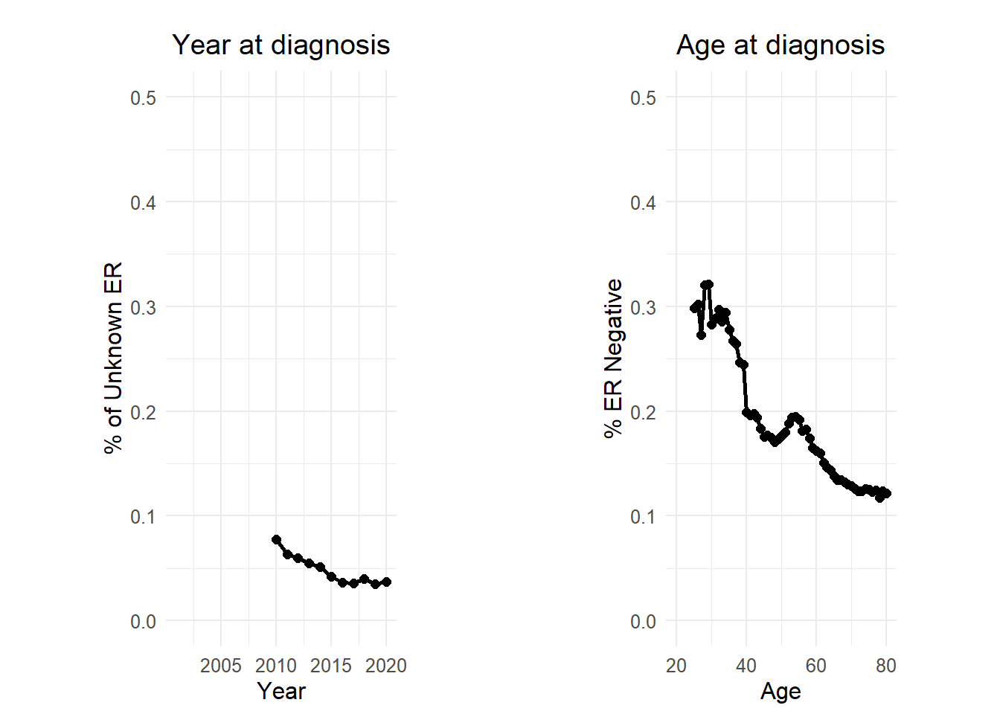
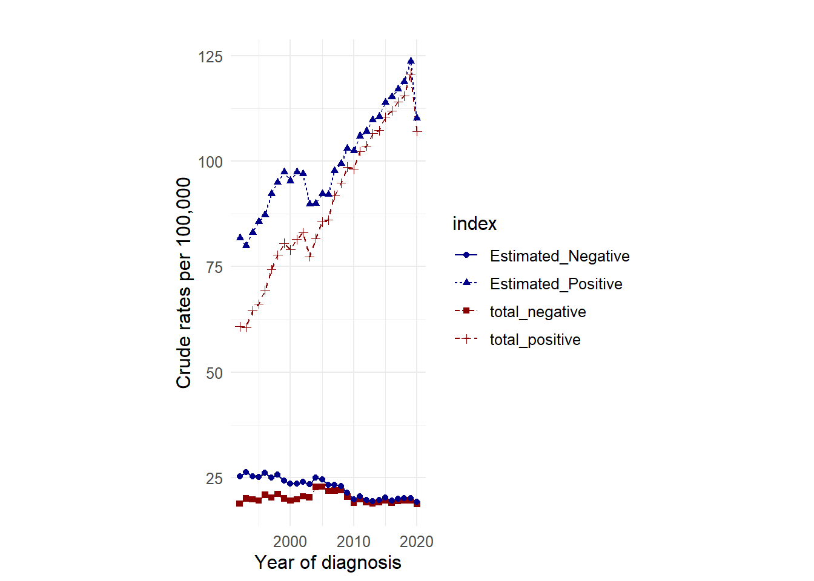

Simple Imputation - malignant breast cancer by ER using SEER 12, 1992–2020
Data Source
National Cancer Institute. Surveillance, Epidemiology, and End Results (SEER12) Program Populations (1992-2020). Available at: www.seer.cancer.gov/popdata. Released November 2023. National Cancer Institute, DCCPS, Surveillance Research Program.
Morphology
Infiltrating Ductal Carcinoma (IDC)
- 8500/3: Infiltrating duct carcinoma, NOS’
- 8523/3: Infiltrating duct mixed with other types of carcinoma’
ER Status Recode for Breast Cancer (1990+): ‘Positive’, ‘Negative’, ‘Borderline/Unknown’, ’Recode not available
load required libraries
Importing Encrypted SEER12 Data Files from GitHub Repository
Discuss the process involved in accessing locked data files from SEER12 that have been stored on GitHub.
# Read the dataset from the provided URL
url <- "https://raw.githubusercontent.com/filhoalm/Breast_cancer/main/Incidence/see12/seer12_er.csv"
df <- read_csv(url)
Figure A presents the annual proportions of breast cancer cases with unknown ER status. Figure B details the yearly proportions of breast cancers with ER-negative status.”
Proportion of unknown by ER status and breast cancer subtype.
Simple imputation for malignant breast cancer by ER
A simple imputation method to correct the rates of ER-positive and ER-negative was based on the method proposed byAnderson at al., 2011
in brief:
We developed a simple imputation model to correct the apparent rates of ER-positive and ER-negative breast cancer for missing ER data. For each age a and year t, we partitioned the observed total number of incident breast cancers \(0^I_{at}\) according to ER status. Hence
\[ I^I_{at} = P^0_{at} + N^0_{at} + U^0_{at} \tag{1} \]
in which \(P^0_{at}\), \(N^0_{at}\), and \(U^0_{at}\) are the observed ER-positive, ER-negative, and unknown counts, respectively. Prior studies have analyzed \(P^0_{at}\) and \(N^0_{at}\), but if \(U^0_{at}\) varies by either a or t these results may be biased. Our imputation method estimates the unobserved complete data
\[ I^0_{at} = P^C_{at} + N^C_{at} \tag{2} \]
in which \(P^C_{at}\) and \(N^C_{at}\) are the true numbers of ER-positive and ER-negative counts, respectively.
Our model assumes that unknown ER status is missing at random within a single year of age a and calendar year t of diagnosis. Under this model, the observed probability \(\pi_{at} = \dfrac{P^0_{at}}{P^0_{at} + N^0_{at}}\) on the basis of patients for whom we have complete information is an unbiased estimator of the true probability at the population level that an incident breast cancer diagnosed among women age a and calendar year t is ER positive. The equations
\[ P^C_{at} = \hat{\pi}_{at} \times I^0_{at} \tag{3} \] \[ N^C_{at} = (1 - \hat{\pi}_{at}) \times I^0_{at} \tag{4} \]
provide unbiased estimators of the true numbers of ER-positive and ER-negative breast cancers in the population.

# A tibble: 6 × 10
age year total_po…¹ total…² total…³ total…⁴ Obser…⁵ Obser…⁶ Estim…⁷ Estim…⁸
<dbl> <dbl> <dbl> <dbl> <dbl> <dbl> <dbl> <dbl> <dbl> <dbl>
1 40 1991 5487 1919 7406 8142 0.741 0.259 6032 2110
2 40 1992 120 75 195 248 0.615 0.385 153 95
3 40 1993 128 71 199 247 0.643 0.357 159 88
4 40 1994 141 69 210 253 0.671 0.329 170 83
5 40 1995 116 72 188 235 0.617 0.383 145 90
6 40 1996 134 83 217 273 0.618 0.382 169 104
# … with abbreviated variable names ¹total_positive, ²total_negative,
# ³total_known, ⁴total_cases, ⁵Observed_Probability_Positive,
# ⁶Observed_Probability_Negative, ⁷Estimated_Positive, ⁸Estimated_Negative